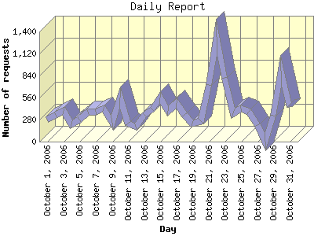

Report generated by Analog 6.0 and Report Magic 2.21
|
Web Server Statistics for "Harish Narayanan (hnarayan) - October 2006" Report generated by Analog 6.0 and Report Magic 2.21 |
The Daily Report identifies the activity for each day within the reporting period. Remember that one page hit can result in several server requests as the images for each page are loaded.

| Day | Number of requests | Number of bytes transferred | Percentage of the bytes | Percentage of the requests | |
|---|---|---|---|---|---|
| 1. | October 1, 2006 | 281 | 12.109 MB | 1.67% | 2.19% |
| 2. | October 2, 2006 | 335 | 6.915 MB | 0.95% | 2.61% |
| 3. | October 3, 2006 | 390 | 21.713 MB | 3.00% | 3.04% |
| 4. | October 4, 2006 | 223 | 13.204 MB | 1.82% | 1.74% |
| 5. | October 5, 2006 | 281 | 17.576 MB | 2.43% | 2.19% |
| 6. | October 6, 2006 | 383 | 15.389 MB | 2.13% | 2.98% |
| 7. | October 7, 2006 | 379 | 11.401 MB | 1.57% | 2.95% |
| 8. | October 8, 2006 | 420 | 11.400 MB | 1.57% | 3.27% |
| 9. | October 9, 2006 | 236 | 13.091 MB | 1.81% | 1.84% |
| 10. | October 10, 2006 | 562 | 19.941 MB | 2.75% | 4.38% |
| 11. | October 11, 2006 | 232 | 11.985 MB | 1.66% | 1.81% |
| 12. | October 12, 2006 | 187 | 14.862 MB | 2.05% | 1.46% |
| 13. | October 13, 2006 | 341 | 62.147 MB | 8.59% | 2.66% |
| 14. | October 14, 2006 | 408 | 28.647 MB | 3.96% | 3.18% |
| 15. | October 15, 2006 | 562 | 11.021 MB | 1.52% | 4.38% |
| 16. | October 16, 2006 | 387 | 35.711 MB | 4.93% | 3.01% |
| 17. | October 17, 2006 | 490 | 22.807 MB | 3.15% | 3.82% |
| 18. | October 18, 2006 | 345 | 15.646 MB | 2.16% | 2.69% |
| 19. | October 19, 2006 | 230 | 7.217 MB | 1.00% | 1.79% |
| 20. | October 20, 2006 | 264 | 5.863 MB | 0.81% | 2.06% |
| 21. | October 21, 2006 | 721 | 39.657 MB | 5.48% | 5.62% |
| 22. | October 22, 2006 | 1,329 | 67.566 MB | 9.33% | 10.35% |
| 23. | October 23, 2006 | 814 | 125.199 MB | 17.30% | 6.34% |
| 24. | October 24, 2006 | 360 | 15.949 MB | 2.20% | 2.80% |
| 25. | October 25, 2006 | 420 | 14.276 MB | 1.97% | 3.27% |
| 26. | October 26, 2006 | 378 | 17.890 MB | 2.47% | 2.94% |
| 27. | October 27, 2006 | 213 | 12.191 MB | 1.68% | 1.66% |
| 28. | October 28, 2006 | 0 | 0.000 B | 0.00% | 0.00% |
| 29. | October 29, 2006 | 332 | 9.982 MB | 1.38% | 2.59% |
| 30. | October 30, 2006 | 895 | 49.256 MB | 6.80% | 6.97% |
| 31. | October 31, 2006 | 442 | 13.277 MB | 1.83% | 3.44% |
Most active day October 22, 2006 : 1,112 pages sent. 1,329 requests handled. 70,847,689.00 served.
Daily average: 428 requests handled. 24.130 MB served.
This report was generated on November 12, 2006 23:07.
Report time frame October 1, 2006 00:03 to October 31, 2006 23:56.
| Web statistics report produced by: | |
 Analog 6.0 Analog 6.0 |  Report Magic 2.21 Report Magic 2.21 |